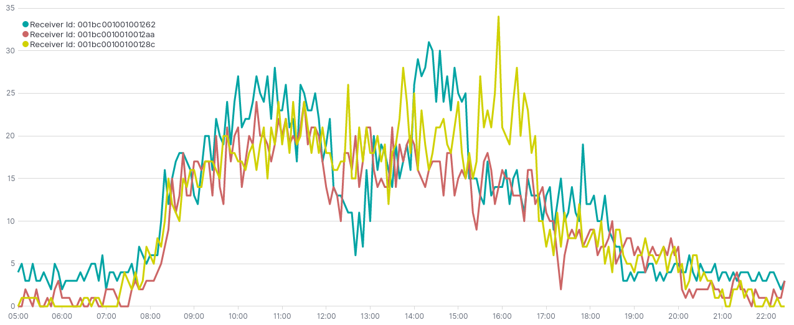
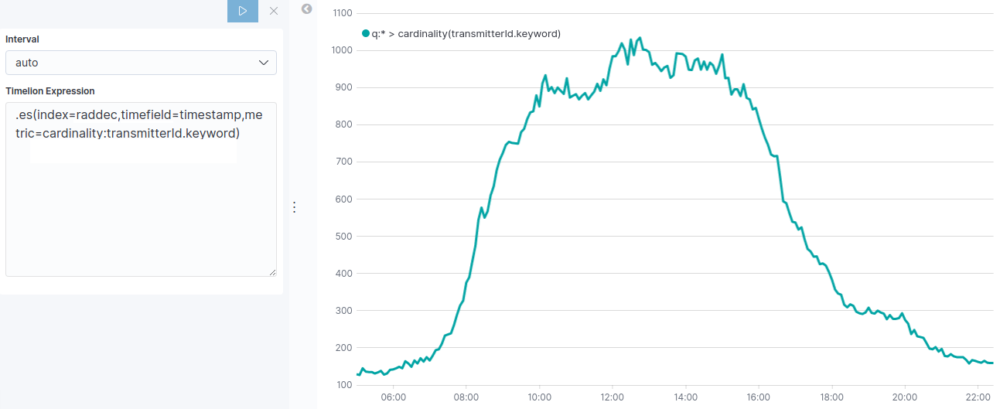
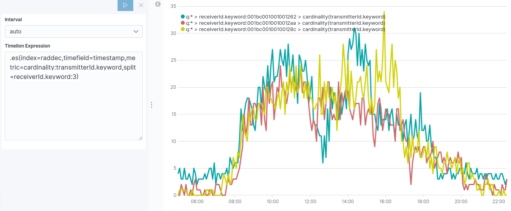
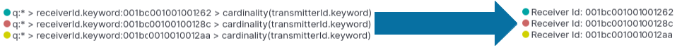

Create a timelion expression of the number of unique devices per receiver in Kibana
Our step-by-step guide to create a timelion expression in Kibana.
The TL;DR (Too Long; Didn't Read)
Learn how we at reelyActive create these visualizations to help you to visualize and analyze your space occupancy.
- What will this accomplish?
- Timelion is a time series data visualizer that enables you to visualize data taken at specified times. Time Series is usually used to predict future occurrences based on previous observed occurrence or values.
- Is there an easier way?
- Manual occupancy counts using pen and paper?
- So why would I read this?
- To learn both how and why to create a timelion visualization.
Prerequisites
reelyActive open source software with Elasticsearch and Kibana.
-

[Optional] Prepare a reelyActive laptop from scratch
Includes our step-by-step guide to install Elasticsearch and Kibana on a Linux computer/server. -

[Optional] Set up a hosted Elasticsearch Service
Includes our step-by-step guide to setup Elastic's convenient hosted cloud service.
In order for there to be data to visualise, the reelyActive software must also have collected and written raddec data to Elasticsearch.
Open a timelion visualization Step 1 of 4
Create and visualize a timelion on Kibana.
- What's Timelion ?
- Timelion is an visualization tool for time series in Kibana. It allows to retrieve and analyse data in time order.
- Why Timelion rather than bar or pie chart ?
- Its main attribute is its ability to chain functions, using a timelion specific syntax to create a very specific visualization that visual editor can't perform.
- Why Kibana ?
- Kibana makes it easy to visualise data from an Elasticsearch database, where the source data is stored.
Open Kibana and then:
- Select the Visualize tab from the left menu bar
- Click the Create a Visualization button
- Select the Timelion chart
The default settings will result in an empty timelion expression .es(*) which leads to a null value on the y-axis, similar to that below. The next step will be to define a meaningful timelion expression to visualize data.
Create a Timelion Expression Step 2 of 4
Create timelion expressions to visualize data properly.
- What's a Timelion expression?
- Timelion expression is characterized by the
.es(or.elasticsearch) function which gathers data from Elasticsearch and draws it over time.
Each Timelion expression begins with a dot, followed by es and surrounded by parentheses which contain parameters.
To visualize the number of unique devices, you are going to define an index, timefield and metric.
| Settings | What's for? | Parametters |
|---|---|---|
| Index | Index to query. Provide Index Pattern name for scripted fields and field name type ahead suggestion for metrics, split and timefield arguments. | raddec |
| Timefield | Field of type "date" to use for x-axis. | timestamp |
| Metric | An elasticsearch metric agg:avg, sum, min, max, percentiles or cardinality, followed by a field. | cardinality:transmitterId.keyword |
By assembling all these settings and parameters you should get the following expression:
.es(index=raddec,timefield=timestamp,metric=cardinality:transmitterId.keyword)The Timelion should now feature a curve providing a visualisation of relative number of unique device, similar to that below. In the next step we are going to split the Timelion expression to visualise the number of unique device per receiver.
Split Timelion Expression Step 3 of 4
Split the timelion function to visualize different series.
- Why split an expression ?
- Lines divided by the value of a specific field give a meaningful way of comparison and analysis.
So far we've displayed the cardinality of unique devices for all sensors. To gain precision and analysis we are going to visualise the number of unique device per receiver using split parameter.
| Setting | What's for? | Parametter |
|---|---|---|
| Split | An elasticsearch field for split the series on and a limit. | receiverId.keyword:3 |
By adding the split parameter to the exisiting .es() function you should have the following expression :
.es(index=raddec,timefield=timestamp,metric=cardinality:transmitterId.keyword,split=receiverId.keyword:3)The resulting visualization should look like the one below :
Customize and Format Visualisation Step 3 of 4
Customize and Personalize the visualization.
- Why customizing ?
- Timelion has many options for customization. You can personalize nearly every aspect of a chart with the functions available.
Several parameter can be modified or added. In this visualization, a relevant improvement would be to change the labels of each serie.
| Settings | What's for? |
|---|---|
| Label | Legend value for series. You can us $1, $2, etc, in the string to match up with the regex capture groups. |
| Regex | A regex with capture groupe support. |
To label different lines on split operation you can add to the existing .es() function the function below :
.label("Receiver Id: $1", "^.* > receiverId.keyword:(.+) > .*")The $1 will be replaced by the first argument in the regex, receiverId.keyword:(.+) so you should end up your key labels as:
Receiver Id: identification1
Receiver Id: identification2
Receiver Id: identification3
This visualization can be combined with other visualizations as part of a space occupancy dashboard, such as that below.

Where to next?
Create other visualizations, or continue exploring our open architecture and all its applications.
-

reelyActive Kibana integration overview
Find links to all our Kibana tutorials. -

diyActive Home
The home for reelyActive developers.